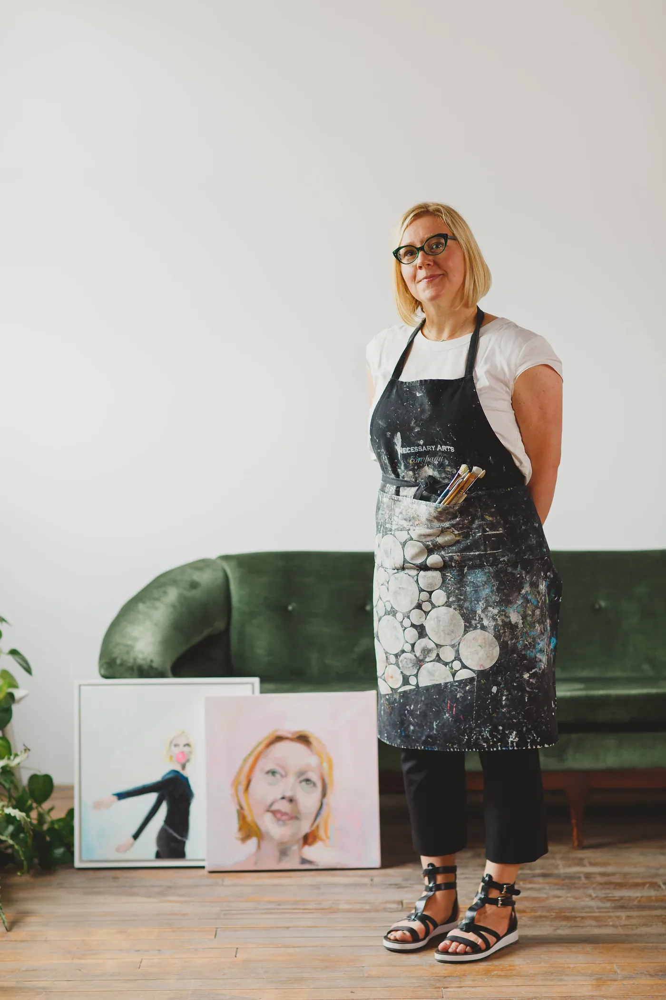

I paint two things at once: pairing subjects, moods or activities in order to explore how to find ease within the bothness: a moment of transition before the wind changes direction.
Frances (b.1976) studied English Literature and Art History at McGill University before teaching for a year in Italy where she fell in love with design. A graduate of Environmental Design at the OCADU, Frances works in interior design.
Somewhere along the line Frances became a painter. Her work is heavily influenced by the colour and textures of her design world. Her artwork is in private collections across Canada, the US, the Middle East, the UK and part of the public collection of the Canadian Mental Health Association. She splits her time between Guelph and Toronto.
No longer accepting commissions of figurative work.
C.V.
- 2021“Drifting Geography” Red Brick Cafe, Guelph.
- 2019“Bubblegum Landscapes” Elora Centre for the Arts, Elora.
- 2017“A Moment on the Lips” Rotunda Gallery, City of Kitchener.
- 2016"Stack of Smalls" Open Air Gallery on Quebec Street, DGBA, Guelph.
- 2015"100 Smalls" Capacity 3 Gallery, Guelph
- 2024“This Side or That Side” at Stakt Market, designTO exhibitor, Toronto
- 2020designTO exhibitor, Toronto
- 2019Krampusmarkt Vancouver
- 2019“Call and Response” with Alisa McRonald. Silence, Guelph
- 2019Toronto Outdoor Art Fair, Toronto
- 2018Krampusmarkt Vancouver
- 2018“Square Foot Show,” Paula White Diamond Gallery, Waterloo
- 2018"Festival of Smalls," Art Interiors, Toronto
- 2018The Artist Project, Toronto
- 2018International Women’s Day Exhibit, Silence, Guelph
- 2018“Lovers Tarot Card” curated by Shelley Carter, Wellington County Museum
- 2017object handmade, Vancouver, BC
- 2017“Caution May be Hot”, Long Weekend, San Francisco, CA
- 2017“Women and Girls Love Justice” curated by Jane Adams, Propeller Gallery, Toronto
- 2017“Portraits and People: An Assembly of Forms” Elora Centre for the Arts, Elora
- 2017“Live Long Piss off Your Heirs” Curated by Olga Korper and Taiga Lipson, Propeller Gallery, Toronto
- 2017Toronto Outdoor Art Exhibition, Toronto
- 2017Insights, Wellington County Museum, Elora
- 2017Art on the Street, Guelph
- 2017The Artist Project, Toronto
- 2016Visual Arts Mississauga Annual Curated Show, Art Gallery of Mississauga
- 2014"Spinning Yarns," Wall of Art, Guelph Civic Museum, Guelph
- 2014Barns Art Market, Toronto
- 2014Queen West Art Crawl, Toronto
- 2013Art on the Street, Guelph
- AOCAD (Honours), Environmental Design, Ontario College of Art and Design, Toronto, 1999– 2003.
- Bachelor of Arts (First Class Honours), English Literature and Art History, McGill University, Montreal, 1994 –1998.
- 2019Mural Artist, Circle Craft, Vancouver.
- 2018TicTac x Tiffany Pratt, Artwork for National Billboard Advertising campaign, Toronto, Montreal + Vancouver
- 2018with Andra Arnold, Coldwell Banker Neumann Realty, Advertising campaign on local buses, Guelph
- 2016Canadian Mental Health Association, “Working Together” installation